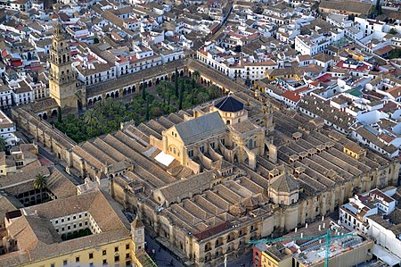

La Mezquita
Una mezquita es un lugar de culto para los seguidores de la fe islámica. Los musulmanes generalmente se refieren a las mezquitas por su nombre arábigo, masŷid (árabe: مسجد — pronunciado: /ˈmas.ʤid/), en plural masāŷid (مساجد /maˈsa:.ʤid). La palabra "mezquita" se usa en español para referirse a todo tipo de edificios dedicados al culto islámico, pero en árabe existe una diferencia entre las mezquitas privadas, más pequeñas, y las mayores, de uso colectivo (masŷid ŷāmiʿ; árabe: مسجد جامع; mezquita aljama, en español), que albergan a una comunidad mayor y disponen de más servicios sociales. Estas construcciones tienen sus orígenes en la Península arábiga, pero en la actualidad se pueden encontrar en los cinco continentes.
propósito principal de la mezquita es servir de lugar donde los musulmanes puedan reunirse para orar. Si bien hoy en día no son solo conocidas en todo el mundo por su importancia general para la comunidad musulmana, sino también como muestras de la arquitectura islámica. Desde el punto de vista arquitectónico, las mezquitas han evolucionado significativamente desde los espacios al aire libre, como lo fueron en su momento las de Quba y Masŷid an-Nabawī en el siglo VII. Hoy en día la mayoría de las mezquitas tienen cúpulas elaboradas, minaretes y salas para orar. Culturalmente, las mezquitas no son solo lugares para orar, sino también lugares para aprender sobre el Islam y conocer a otros creyentes.
Durante mucho tiempo, e incluso en la actualidad, se ha asociado a las mezquitas con grandes entradas y altas torres, o minaretes. Sin embargo, las tres primeras mezquitas fueron simplemente espacios abiertos en Arabia. Las mezquitas evolucionaron considerablemente en los siguientes mil años, en los que fueron adquiriendo sus rasgos distintivos y se adaptaron a diferentes entornos culturales de todo el mundo.
De acuerdo con las creencias islámicas, la primera mezquita en el mundo fue la Kaaba, construida por Adán siguiendo un mandato de Dios y posteriormente reconstruida por Abraham. La mezquita más antigua que se conoce es la de Quba, en Medina. Cuando Mahoma vivía en La Meca, consideraba la Kaaba su primera y principal mezquita y celebraba allí sus oraciones junto con sus seguidores. Incluso durante la época en que los árabes paganos realizaban sus rituales dentro de la Kaaba, Mahoma siempre la tuvo en muy alta estima. La tribu de Quraysh, de La Meca, responsable de proteger la Kaaba, intentó excluir a los seguidores de Mahoma del santuario, lo que se convirtió en motivo de queja por parte de los musulmanes, como se recoge en el Corán.1 Cuando Mahoma conquistó La Meca en 630, convirtió la Kaaba en una mezquita, y desde entonces se la conoce como Masŷid al-Ḥaram, o "Mezquita Sagrada". La Masŷid al-Ḥaram fue ampliada y mejorada considerablemente en los primeros siglos del Islam para acoger al creciente número de musulmanes que vivían en la región o cumplían el haŷŷ, peregrinación anual a La Meca. Adquirió su forma actual en 1577, durante el reinado del sultán otomano Selim II.2 Lo primero que hizo Mahoma cuando llegó con sus seguidores a Medina (entonces llamada Yatrib), tras la Hégira, en el año 622, fue construida la mezquita de Quba en una aldea de las afueras de Medina.3 Los musulmanes creen que permaneció en la mezquita de Quba durante tres días antes de trasladarse con el resto a Medina.4
Apenas algunos días después de comenzar a trabajar en la mezquita de Quba, Mahoma fundó una nueva mezquita en Medina, conocida hoy como la Masŷid an-Nabawī, o "Mezquita del Profeta". Se la llamó así por haber sido el lugar de la primera ŷumʿa (جمعة,"oración de los viernes") de Mahoma. Esta palabra comparte en árabe la raíz جمع (ŷ-m-ʿ), con مسجد جامع (masŷid ŷāmiʿ, las mezquitas mayores). En los años que siguieron a su fundación, la Masŷid an-Nabawī continuó introduciendo algunas de las prácticas que ahora son consideradas comunes en las mezquitas de hoy en día. Por ejemplo, la 'aḏān, o "llamada a la oración", se desarrolló en la forma que todavía se usa en las mezquitas actuales. La Masŷid an-Nabawī fue construida con un gran patio, un elemento común en las mezquitas posteriores. Mahoma habría predicado de pie en uno de los extremos de la arcada. Más tarde habría desarrollado un púlpito de tres escalones para usarlo como plataforma desde donde pronunciar sus sermones.4 El púlpito, ahora conocido como minbar, sigue siendo un elemento muy común de las mezquitas.
Mahoma residía junto a la mezquita de Medina, que era al mismo tiempo el centro religioso y político de la primitiva comunidad musulmana. En la mezquita llevó a cabo negociaciones, planeó acciones militares, recluyó a prisioneros de guerra, apaciguó disputas, predicó y recibió ofrendas que posteriormente distribuyó entre sus compañeros. Sus seguidores trataban a los heridos allí, e incluso algunas personas vivían permanentemente en la mezquita en sus tiendas y chozas. Debido a que las distinciones entre religión y política están ausentes en el islam, no resulta extraño que la primera mezquita fuese un centro político y religioso para las primeras comunidades musulmanas.1
Hoy en día, la Masŷid al-Ḥaram en La Meca, la Masŷid an-Nabawī en Medina y la Al-'Aqsà en Jerusalén son consideradas los tres lugares más sagrados del Islam.5